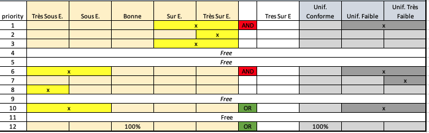

Spatial Analysis
Open Data:
1. Calculate polygon widths: We use the polygon features for roadways and sidewalks, sourced by the City of Paris open data. The steps to add road and sidewalk widths are as follow:
2. Connect polygons to line geometries: The next step is to connect the roads ids, with the polygon features in order to get a 1-to-1 connection between all polygons to a road segment. That will help us connect the calculated widths to a the street line geometry.
1. Preprocessing: Fistly, some preprocessing was done to convert the point geometries to WGS 84 and delete some geometries that were not assigned with the correct SRID and could not be projected. All relevant tables from the MS access database were then joined into one using the IDs provided and explained in the Metadata.xls file. This data was stored in a new table called "all_mdb_data".
2. Filtering: The data was filtered to only include lighting features and this new data was stored in a new table called "street_lights_only" by "MTYLIBELLE" = 'Lampe EP'.
3. Spatial join: Then the street light geometries where connected with the open data street light geometries by distance. For optimization reasons only the lights that were in close proximity (within 10 m of each other) were assessed when looking for the closest one. To avoid duplicate lights being assigned to a single point, all street lights were only allowed to have one connection with a different point. The lookup table with the codes for the connection was stored in a new table called "open_mdb_lights_codes". Using the lookup table the street lights were connected to the open data street lights and their properties shared. The joined tables were stored as a new table "open_mdb_lights".
The light measurements are sourced from the xls files from the client. The xls files are combined into one file before they are uploaded to Postgres. The "brute" file is the raw measurements and the "analyse" file is the analyses for each road segment. We will use the brute file to connect the road names to the road segment ids, and the analyse file to assign the result of the street light measurements to each road segment.
1. Unique ID: First we generate a new column for both the brute and analyse files that will concatenate the CONTRAT, VOIE and TRONCON into one field, so each road segment has a unique identifier and re-upload to the database.
2. Spatial join: Similar as before we connect each measurement to its closest road segment by distance. We group by all the road segments, and each gets the most popular name out of all the measurement points that were connected to it. That is to avoid mismatches in street corners, where the measurement might be closer to a different road segment. The result is added to a lookup table named "roadName_rid_codes".
3. Additional names: We can also add the data from the lookup table that was generated before that includes the road names from the street light data ("roadName_fromlights_rid").
4. Join to roads: Finally, we join the analyse table with the road segment geometries using the lookup table that was just generated.
1. Road names: The street lights are then connected to the road segments by distance to create a lookup table between the road names as present in the street light table (VOILIBELLE) and the road id. Each light is connected to one road and then the road id is assigned the most popular name from all street lights connected to it. That is done to avoid wrong naming streets as some lights on corners are assigned to them but technically belong to a different street. If a road was connected to lights with different road names associated with them (same number of lights in each group), then the road took the name of one of the groups and the rest of the lights would be unconnected. To enhance the process of connecting lights to roads, the same process was run again using as inputs the street lights and road segments that were left unmatched on the first round. This optimization enabled more lights to be connected to roads, and more roads to be given names.
2. Count street lights on road: Then each street light is assigned to a road segment by distance. As mentioned before some street lights on corners might be closer to a different segment. To avoid mismatching only the roads that have the same name as the one mentioned in the street lights table as assessed when looking for the closest segment. Finally, for each road segment the lights that were matched to it are counted and added as a separate column in the streets table "stlights_number".
3. Estimating power consumption per road segment: The dataset for street lights from the open dataset has 2 relevant fields for actual lamp power PWE using an electronic driver and PWC using a condensator "balast". For each road segments, these two fields were summed for all the lights that were assigned to it and the final power consumption of the segment was added as a field to the road under the column "pwe_pwc".
4. Identify lamp type: The dataset for street lights given by the client has a lamp description field under MTFLIBELLE. For each description a short code name to describe the lamp type was associated with each street light as:
5. Identify lamp type priority: Based on their lamp type, priorities were defined as:
1. Primary and Secondary light types for each segment: To identify what the primary light type of each road segment a number of rules were followed.
2. Energy savings for each segment: For each road segment the energy savings were calculated if the lamp type was converted into an LED. Firstly, the power of the road segment with an LED light was estimated using the LED efficiency of 0.06 W/m2*lux, the road and sidewalk area (estimated before) and the mean existing lighting level listed in the measurement database (Eclairement_moyen_exige). This was divided by the number of street lights per segment to get an average required power. The energy savings are calculated by subtracting the actual power estimated above (pwe_pwc) from the LED power.
3. Road segment conformity priority: The priorities for each road segment were set as described in the image below.
4. Entire road conformity priority: For the entire road that corresponds to multiple road segments the priorities were set if a certain amount of road segments were fullfilling certain criteria as specified below.
This assessment aims to direct to street lights that have an influence on parks.
1. Lights inside parks: To identify which street lights fall within the boundaries of parks with enclosures, the `PROLIBELLE` field was used and checked whether `DEVE` was contained in the field attributes. In addition, the field `NRELIBELLE = HORAIRE EP` and `NRELIBELLE = HORAIRE SQUARE` were used. The parks with enclosures were selected by using the field `presence_cloture = oui` and the lights that intersect with those parks were selected.
2. Lights close to parks: To identify which street lights are located close to parks, a buffer of 40 m was included in the park dataset and the street lights that fall into it were selected as having a proximity to the parks. A column was added to the lights table with the id of the park that they were close to `park_ogc_fid`. Their distance to the park was also calculated in meters and added as a separate column `dist_to_park`.
3. Building shadows: As an advanced feature of the lights that have a proximity to parks, we wanted to exclude the street lights that are close to parks but a building is intejecting the direct contact between light and park. To achieve this, we connected each light with its closest park with a line that connects the point of the line to the point along the park polygon that is closest to the light. Then we checked whether this line intersects any buildings. If not, the light and park remain connected `park_influence = yes` otherwise `park_influence = no`.
This assessment aims to calculate the current and future energy consumption for each road segment.
1. Current and future power for each lamp type: For each lamp type a current and future power value was estimated by INEO. These values were connected to the lighting database using the field `MBILIBELLE` and assigned to each light in the database.
2. Current and future power for each road segment: The lights were connected to the roads that they belong to by using the lookup table `stlights_on_road` developed previously and for each road segment the power * hours of operation (given in `NRSTOTAL`) was calculated for current and future energy use.
current_power_MWh = sum(mbipw * NRSTOTAL/1000)
future_power_MWh = sum(pwled * NRSTOTAL/1000)
This assessment aims to identify the lighting poles that could potentially be candidate locations for EV charging stations. The candidate locations need to be close to a parking spot (no more than 2m away) and have no buildings or other obstacles in between the parking spot and the pole.
1. Identify poles: The poles are identified from the lighting dataset by applying the filters `Candélabre` or `Mât`.
2. Buffer: A buffer zone of 2 m is applied to all parking spots (after they have been projected to a metric projection epsg:31467). The poles that fall within this buffer zone are selected.
3. Calculate distance: A distance is calculated from all the poles that fall within the 2 m buffer zone to the closest point of a parking spot. The distance is listed in the `dist_to_parking` field.
3. Building interference: As an advanced feature of the poles that have a proximity to parking spots, we wanted to exclude the poles that have a building intejecting the direct contact between pole and parking. To achieve this, we connected each pole with its closest parking with a line that connects the point of the line to the point along the parking polygon that is closest to the pole. Then we checked whether this line intersects any buildings. If not, the pole and park remain connected and a property is set as `ev_charging = yes` otherwise `ev_charging = no`.